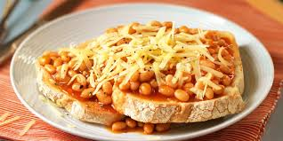

BIG Beans on Toast

Description
This big beans on toast recipe is actually my own creation.
I underwent a serious gym journey a few years ago, back in 2021. I had decided that
I'd had enough of being skinny, and wanted to put on some serious size. I got myself
a personal trainer and started increasing my food intake.
The biggest challenge I had was breakfast. I found it difficult to think of a
meal I could eat in the morning which gave me the calories I needed.
Then I decided, I'd just make a massive beans on toast. Here's the recipe.
Good luck eating this in one sitting!
Ingredients
- 3 thick slices of bread
- 1 tin baked beans
- 4 slices of cooked turkey
- 4 slices of cheese (I used vegan due to my dairy allergy)
- Some hot sauce for flavour
Method
- Pop the 3 slices of bread in the toaster, toast to preference.
- Heat the baked beans on a medium-low heat for 4-5 minutes.
- Add a few dashes of hot sauce to the beans, to taste.
- Once everything is heated/toasted, time to plate up!
- Lay down the toast first, and butter each slice. Then pour the beans over
evenly.
- Next, lay the slices of cheese over the beans.
- Lay the slices of turkey on top of the cheese. Then finally, a few more dashes
of hot sauce to finish!